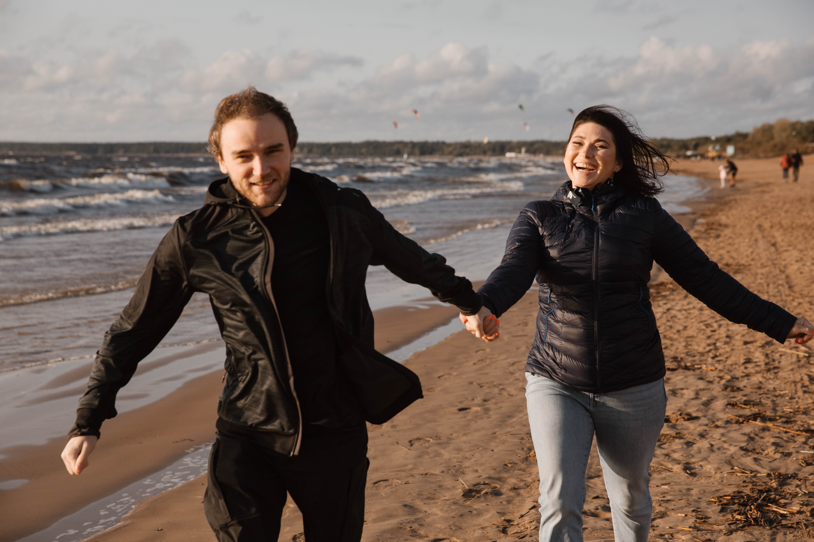

Екатерина и Кирилл
Дата: 18.07.24 15:20
Петергоф, Торговая пл., 5
Дорогие друзья!
В нашей жизни есть счастливые и радостные моменты, которые хочется разделить с дорогими людьми. Мы приглашаем вас открыть вместе с нами новую страницу книги нашей жизни.
Мы будем счастливы увидеть вас на торжестве по случаю нашей свадьбы и разделить этот важный момент вместе с нами.
Пожалуйста, уведомите нас о вашем присутствии к 01.06.24.
С любовью,
Екатерина и Кирилл
Торжественная регистрация брака состоится
18 июля 2024 года в 15:20
Праздничный банкет состоится в 18:00 в кулинарной студии CULINARYON
У нас планируется активный и насыщенный вечер. Мы вместе приготовим вкусные блюда и узнаем секреты их приготовления. Пожалуйста, позаботьтесь об удобной обуви на вечер.
Для нас самое главное – ваше присутствие!
Дресс-код
Мы создаем наш свадебный день с особым трепетом. И нам будем приятно, если вы поддержите цветовую гамму нашей свадьбы:
Для леди:
Для джентельменов:
Подарки
В качестве подарка будем благодарны за любой, даже символический, вклад в бюджет нашей молодой семьи. Мы знаем как вы за нас рады и будем счастливы, если вы захватите с собой отличное настроение и слезы умиления, а букеты замените на бутылки с вкусным вином, медовухой или сидром. Если же ваше сердце жаждет преподнести именно цветы, то просим сделать выбор в пользу одной белой розы. В итоге у нас получится один роскошный букет.
Контакты
В день свадьбы по всем вопросам можете обратиться к нашим свидетелям:
Анна: +7 921 449 71 17
Виктор: +7 921 595 60 50